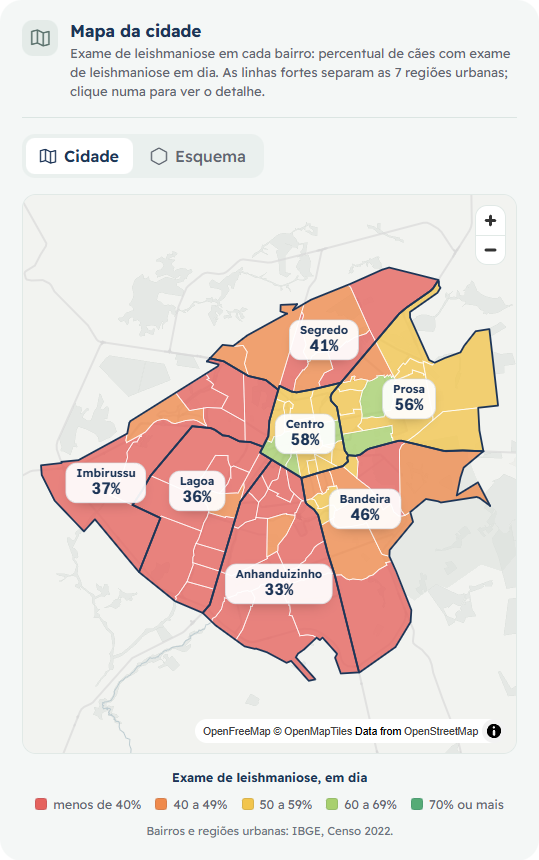

O que entrou na PetJourney em 17 de novembro
Portal da clínica, portal do parceiro, Saúde pública, app, site e CMS. O que mudou para quem usa, em uma página.

O mapa da cidade no painel da Saúde pública.
Portal da clínica
O dia a dia do atendimento
- Menu por trabalho, em seções, com quatro formatos à escolha.
- Início com ações rápidas. Os atalhos do dia e as áreas da Clínica, sem repetir números.
- Pendências com o próximo passo. Cada paciente mostra quem, quando e o botão da ação certa.
- Cadastro de paciente em passos, em uma gaveta lateral.
- Fotos dos pets nas listas de pacientes e de vacinas aplicadas.
- Vacinas em cartões. Lista de chamada, visão por mês e "Editar registro".
- Lembrete de vacina. A clínica pede e o responsável recebe no app. aguarda a API
- Convite do paciente para o app por link, WhatsApp e QR Code.
- Fim do atendimento com os próximos passos na janela de concluído.
- Telas vazias que ensinam, com o botão de cada etapa.
Portal do parceiro e empresa
Clientes, divulgação e o cadastro da empresa
- Módulos pelo dono. Ele liga o teste grátis, desliga e religa os módulos no Início.
- Várias categorias na empresa, com a principal na frente. Também no site e no CMS.
- Menu do Portal em Clientes e Empresa. Programas sai quando os dois estão ativos.
- Divulgação em abas, Convidar e Indicados. Código, link e QR em três cartões.
- Novo acesso temporário em Acessos.
Saúde pública
Protótipo para a Câmara de Campo Grande
- Mapa da cidade por bairro e por região, na escala de risco, com o detalhe da região ao lado.
- Filtros de período, região, campanha e espécie no painel, nas Campanhas, nas ONGs e no Piloto.
- Trabalho em campo: registro, resultado com motivo e etiqueta com QR Code.
- Relatórios por região, bairro ou CEP, e da equipe.
- Piloto de 60 dias com a Subea (Ofício 002/2026), com as metas e o botão "Registrar atendimento".
No app, no site e no CMS
App
- Convite da clínica por link, WhatsApp e QR.
- Lembrete de vacina abre a carteira do pet.
- Cadastro em três etapas.
- Clínica do parceiro em áreas, com fotos e convite.
Site
- Prévia do convite da clínica na página do link.
- Várias categorias no cadastro de parceiro.
- Calculadora de parcerias com período e gráfico mês a mês.
CMS
- Selos e histórico dos módulos que o parceiro liga e desliga.
- Várias categorias nos parceiros e nas listas.
Materiais novos
Folha de venda para clínicas 1 p.
Como entrar no portal 1 p.
Folheto das empresas piloto 3 p.
Guia rápido e resumo da Saúde pública
Guia de teste dos pedidos de 17/11
24 p.